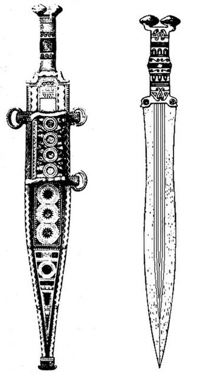
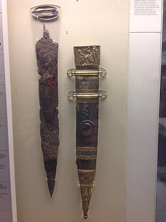

El gladius (latín clásico: [ˈɡɫadiʊs]) es una palabra latina que se refiere propiamente al tipo de
espada utilizada por los soldados de infantería de la antigua Roma desde el siglo III a. C. hasta el
siglo III d. C.. Lingüísticamente, dentro del latín, la palabra también llegó a significar
simplemente “espada”, sin importar el tipo.
Las primeras espadas de la Roma antigua eran similares a las de los griegos, llamadas xiphe (plural;
singular: xiphos). Sin embargo, desde el siglo III a. C., los romanos adoptaron un arma basada en la
espada de los celtíberos de Hispania, que servían a Cartago durante las Guerras Púnicas. En latín se
conocía como gladius hispaniensis, que significa “espada de tipo hispano”.
Los romanos la modificaron según las necesidades de combate de sus unidades, y con el tiempo
desarrollaron nuevos tipos de gladii, como el gladius Mainz y el gladius Pompeii. Finalmente, en el
siglo III d. C., la infantería pesada romana reemplazó el gladius por la spatha (que ya era común
entre los jinetes de caballería romana), relegando el gladius como arma de la infantería ligera.
Un legionario romano completamente equipado, después de los consulados de Cayo Mario (las reformas
marianas), estaba armado con una espada (gladius), un escudo (scutum), una o dos jabalinas (pila), a
menudo una daga (pugio) y, posiblemente en el periodo tardío del Imperio, dardos arrojadizos
(plumbatae). De manera convencional, los soldados lanzaban los pila para inutilizar los escudos
enemigos y desorganizar sus formaciones antes de entrar en combate cuerpo a cuerpo, momento en el
cual desenvainaban el gladius. Generalmente el soldado avanzaba protegido con el escudo y atacaba
con estocadas de la espada.
Gladius
Longitud promedio: 60cm – 85cm
Peso aproximado: 0.7kg – 1kg
Tipo de hoja: Recta, doble filo
Uso principal: Estocada
Etimología
Gladius es un sustantivo masculino en latín. Su plural nominativo es gladiī. Sin embargo, en latín la palabra
gladius se refiere a cualquier espada, no únicamente al tipo de espada descrito aquí. El término aparece en la
literatura tan temprano como en las obras de Plauto (Casina, Rudens).
Generalmente se cree que gladius es un préstamo celta en latín (quizás a través de un intermediario etrusco),
derivado del antiguo celta *kladi(b)os o *kladimos, que significa “espada”. De esta raíz provienen palabras como
el galés moderno cleddyf (“espada”), el bretón moderno klezeff y el irlandés antiguo claideb / irlandés moderno
claidheamh (este último posiblemente también tomado del galés). La raíz de la palabra también puede sobrevivir
en el verbo del irlandés antiguo claidid (“cava, excava”) y está atestiguada en el antiguo elemento de topónimos
galo-britónicos cladia/clado, que significa “zanja, trinchera o depresión del valle”.
Entre las palabras del inglés moderno derivadas de gladius se encuentran gladiator (“espadachín”) y gladiolus
(“pequeña espada”, proveniente de la forma diminutiva de gladius), una planta con flores cuyas hojas tienen
forma de espada.
Predecesores y Orígenes
Según Polibio, la espada utilizada por el ejército romano durante la Batalla de Telamón en el año
225 a. C., aunque considerada superior a las voluminosas espadas galas, era principalmente útil para
estocar. Estas espadas de estocada usadas antes de la adopción del gladius posiblemente estaban
basadas en el xiphos griego. Más tarde, durante la Batalla de Cannas en 216 a. C., los romanos
observaron que los mercenarios celtíberos de Aníbal utilizaban espadas que sobresalían tanto para
cortar como para estocar. Un texto atribuido a Polibio describe la adopción de este diseño por parte
de los romanos incluso antes del final de la guerra, lo cual el propio Polibio reafirma al llamar a
la espada romana posterior gladius hispaniensis en latín e iberiké machaira en griego. Se cree que
Escipión el Africano fue quien impulsó este cambio después de la Batalla de Cartago Nova en 209 a.
C., tras lo cual ordenó a los habitantes fabricar armas para el ejército romano.
En el año 70 a. C., tanto Claudio Cuadrigario como Tito Livio relatan la historia de Tito Manlio
Torcuato utilizando una “espada hispana” (gladius Hispanus) en un duelo contra un galo en 361 a. C.
Sin embargo, el gladius todavía no era utilizado por los romanos en el siglo IV a. C., por lo que
esto se ha considerado tradicionalmente un anacronismo terminológico causado por la convención de
nombrar así estas espadas posteriormente. Es posible que la espada celtíbera fuera adoptada por los
romanos después de sus encuentros con mercenarios cartagineses de esa nacionalidad durante la
Primera Guerra Púnica (264–241 a. C.), y no durante la segunda. En cualquier caso, el gladius
hispaniensis se hizo particularmente conocido alrededor del año 200 a. C., durante la Segunda Guerra
Macedónica, cuando los soldados macedonios quedaron horrorizados por lo que las espadas romanas
podían hacer tras una escaramuza inicial de caballería. Se ha sugerido que la espada utilizada por
los jinetes romanos era diferente de la de la infantería, pero la mayoría de los académicos han
descartado esta idea.

Una espada de la cultura Cogotas II de la Edad del Hierro en España.
Los argumentos a favor del origen celtíbero del arma se han reforzado en las últimas décadas gracias al
descubrimiento de antiguos gladii romanos que parecen demostrar que eran copias de modelos celtíberos. El arma
se desarrolló en Iberia a partir de modelos de La Tène I, que fueron adaptados a técnicas tradicionales
celtíberas durante finales del siglo IV y principios del siglo III a. C. Estas armas eran bastante originales en
su diseño, por lo que no pueden confundirse con los tipos galos. En cuanto al origen de la palabra gladius, una
teoría propone que fue tomada del término *kladi- durante las guerras galas, basándose en el principio de que la
letra K a menudo se convertía en G en latín. El poeta Ennio atestigua que la palabra gladius pudo haber
reemplazado a ensis, término que hasta entonces era utilizado principalmente por los poetas.
Fabricación
Técnica
Para la época de la República romana, que floreció durante la Edad del Hierro, el acero y el proceso de
fabricación del acero ya eran conocidos en el mundo clásico. El hierro puro es relativamente blando, pero en la
naturaleza casi nunca se encuentra completamente puro. El mineral de hierro natural contiene diversas impurezas
en solución sólida, las cuales endurecen el metal reducido al producir cristales metálicos de forma irregular.
El gladius generalmente se fabricaba con acero.
En la época romana, los trabajadores reducían el mineral en un horno de tipo bloomery. Las piezas resultantes se
llamaban blooms, y luego se trabajaban para eliminar las inclusiones de escoria de la superficie porosa.
Un estudio metalúrgico reciente de dos espadas etruscas —una con forma de kopis griego del siglo VII a. C.
proveniente de Vetulonia, y otra con forma de gladius hispaniensis del siglo IV a. C. de Clusium (Chiusi)—
ofrece información sobre la fabricación de las espadas romanas. La espada de Chiusi proviene de la Etruria
romanizada; por lo tanto, independientemente de los nombres de los tipos, los autores consideran que el proceso
de fabricación fue continuo desde los etruscos hasta los romanos.
La espada de Vetulonia fue fabricada mediante el proceso de soldadura por patrón (pattern welding) a partir de
cinco blooms reducidos a una temperatura de 1,163 °C. Se crearon cinco tiras con diferentes contenidos de
carbono. El núcleo central de la espada contenía el mayor porcentaje: entre 0.15 % y 0.25 % de carbono. En los
bordes se colocaron cuatro tiras de acero con bajo contenido de carbono, entre 0.05 % y 0.07 %, y todo el
conjunto fue soldado mediante forja siguiendo un patrón de golpes de martillo. Cada golpe elevaba la temperatura
lo suficiente como para producir una soldadura por fricción en ese punto. La forja continuaba hasta que el acero
se enfriaba, produciendo cierto recocido en el centro. La espada medía 58 cm de largo.
La espada de Chiusi fue creada a partir de un solo bloom mediante forja a una temperatura de 1,237 °C. El
contenido de carbono aumentaba desde 0.05–0.08 % en la parte posterior de la espada hasta 0.35–0.4 % en la hoja,
lo que lleva a los autores a deducir que pudo haberse utilizado alguna forma de carburización. La espada medía
40 cm de largo y se caracterizaba por tener un estrechamiento tipo “cintura de avispa” cerca de la empuñadura.
Los romanos continuaron forjando espadas tanto como estructuras compuestas como a partir de una sola pieza. Las
inclusiones de arena y óxido debilitaron las dos espadas analizadas en el estudio, y probablemente también
limitaron la resistencia de muchas espadas durante el periodo romano.
Producción
Los artesanos encargados de la tarea estratégica de fabricar los gladii se llamaban gladiarii. Formaban parte de
las legiones romanas como fabri, y disfrutaban del estatus de immunes. También existían talleres públicos,
llamados fabricae, dedicados a la fabricación de gladii. Se han encontrado testimonios epigráficos de los
gladiarii en Italia, especialmente en zonas con antigua tradición metalúrgica como Capua y Aquileia.
Descripción
La palabra gladius adquirió un significado general como cualquier tipo de espada. Este uso aparece ya en el
siglo I d. C. en la Biografía de Alejandro Magno escrita por Quinto Curcio Rufo. Sin embargo, los autores de la
época republicana parecen referirse a un tipo específico de espada, que hoy se sabe por la arqueología que tuvo
varias variantes.
Los gladii tenían doble filo para cortar y una punta afilada para estocar durante los ataques de empuje. Un
agarre firme se lograba mediante una empuñadura con pomo, posiblemente con ranuras para los dedos. La
resistencia de la hoja se obtenía soldando tiras de metal, lo que producía un canal en el centro de la hoja, o
bien forjando una sola pieza de acero con alto contenido de carbono, con sección transversal romboidal. El
nombre del propietario a menudo se grababa o se marcaba en la hoja.
La empuñadura de una espada romana se llamaba capulus. A menudo era ornamentada, especialmente en las espadas de
oficiales y dignatarios.
La estocada era una técnica muy eficaz, ya que las heridas punzantes, especialmente en el área abdominal, casi
siempre eran mortales. Sin embargo, el gladius en algunas circunstancias también se utilizaba para cortar o dar
tajos, como indica el relato de Tito Livio sobre las Guerras Macedónicas, en el que los soldados macedonios
quedaron horrorizados al ver cuerpos desmembrados.
Aunque el ataque principal de la infantería consistía en estocar a la altura del estómago, los soldados eran
entrenados para aprovechar cualquier oportunidad, como cortar las rodillas por debajo del muro de escudos.
El gladius se guardaba en una vaina montada en un cinturón o en una correa al hombro. Algunos dicen que el
soldado cruzaba el brazo sobre su cuerpo para desenvainarlo, mientras que otros sostienen que la posición del
escudo hacía imposible este método. Un centurión lo llevaba en el lado opuesto como señal de distinción.
Hacia finales del siglo II d. C. y durante el siglo III, la spatha fue reemplazando gradualmente al gladius en
las legiones romanas.
Variaciones
Se utilizaron varios diseños diferentes; entre coleccionistas y recreadores históricos, los tres tipos
principales se conocen como Mainz, Fulham y Pompeii (estos nombres se refieren al lugar o a la forma en que se
encontró el ejemplo representativo). Descubrimientos arqueológicos más recientes también han revelado una
versión anterior: el gladius Hispaniensis.
Las diferencias entre estas variedades son sutiles. La espada hispana original, utilizada durante la República,
tenía una ligera curvatura en forma de “cintura de avispa” o de “hoja de laurel”. La variedad Mainz comenzó a
usarse en las fronteras durante el inicio del Imperio. Conservaba la curvatura, pero tenía una hoja más corta y
ancha, y una punta triangular. En el interior del imperio comenzó a utilizarse la versión Pompeii, menos
efectiva para el combate, que eliminaba la curvatura, alargaba la hoja y reducía la punta. El tipo Fulham
representaba un compromiso entre los otros, con bordes rectos y una punta larga.
Gladius Hispaniensis
El gladius Hispaniensis fue una espada romana utilizada aproximadamente desde el año 216 a. C. hasta el 20 a. C.
Su hoja tenía una longitud de entre 60 y 68 cm, y la espada completa medía entre 75 y 85 cm. El ancho de la hoja
era de unos 5 cm. Era el más grande y pesado de los gladii, con un peso aproximado de 1 kg o 900 g. También fue
el tipo más temprano y el que tenía la hoja más larga. Presentaba una forma de hoja muy marcada, similar a una
hoja de planta.
Mainz Gladius
El gladius Mainz está hecho de hierro fuertemente corroído y tenía una vaina de bronce estañado y
dorado. La hoja medía entre 50 y 55 cm de largo y unos 7 cm de ancho. La espada completa tenía una
longitud de entre 65 y 70 cm y pesaba alrededor de 800 g. La punta era más triangular que la del
gladius Hispaniensis. El gladius Mainz aún conservaba la curvatura tipo “cintura de avispa”. La
decoración de la vaina ilustra la entrega de la victoria militar a Augusto por parte de Tiberio
después de una exitosa campaña en los Alpes. Augusto aparece semidesnudo y sentado en una postura
similar a la de Júpiter, flanqueado por los dioses romanos de la Victoria y Marte Ultor, mientras
Tiberio, vestido con atuendo militar, le presenta a Augusto una estatuilla de la Victoria.

Fulham Gladius
El Fulham gladius o Mainz-Fulham gladius fue una espada romana utilizada después de la invasión de Britania por
Aulo Plaucio en el año 43 d. C. Los romanos la usaron hasta finales del siglo I. El Fulham gladius tiene una
punta triangular. La longitud de la hoja es de 50–55 cm y la longitud total de la espada es de 65–70 cm. El
ancho de la hoja es de 6 cm. La espada pesa aproximadamente 700 g (con empuñadura de madera). Una réplica a
tamaño real puede verse en Fulham Palace, en Fulham.
Pompeii Gladius
El Pompeii gladius fue nombrado por los historiadores modernos en referencia a la ciudad romana de Pompeya. Este
tipo de gladius fue con diferencia el más común. Se encontraron cuatro ejemplos de este tipo de espada en
Pompeya, además de otros hallazgos en diferentes lugares. La espada tiene bordes de corte paralelos y una punta
triangular. Es el más corto de los gladii. A menudo se confunde con la spatha, que era un arma más larga,
diseñada principalmente para cortar y utilizada inicialmente por auxiliares montados. Con el tiempo, el modelo
Pompeii se fue alargando, y estas versiones posteriores se conocen como semi-spathae. La longitud de la hoja era
de 45–50 cm y la longitud total de la espada de 60–65 cm. El ancho de la hoja era de 5 cm y el peso aproximado
de 700 g (con empuñadura de madera).